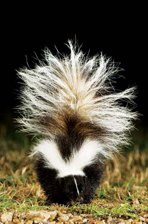
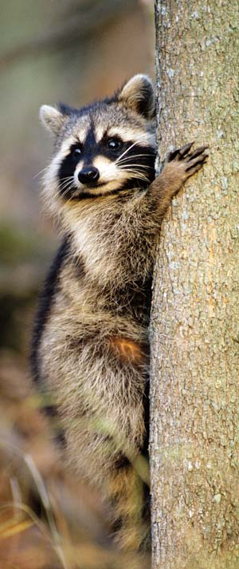
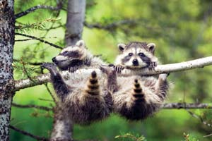
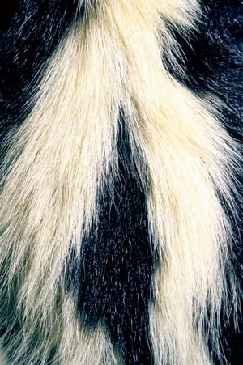
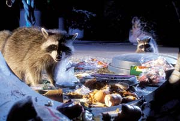
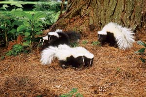
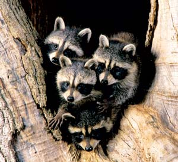
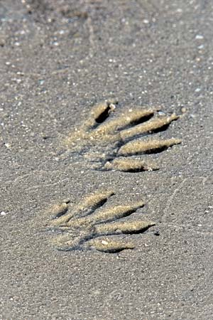
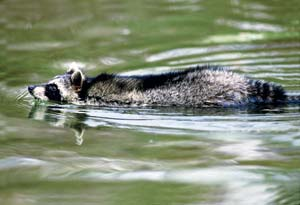
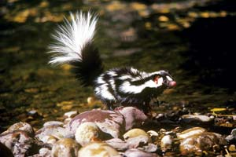

Woods-wise and city-smart, skunks and raccoons are among our nation’s most abundant and widely distributed wild mammals. That’s the good news - and the bad news. On the one hand, they’re charismatic creatures with fascinating natural histories and remarkable survival skills. On the other, they can be serious pests and carriers of potentially deadly diseases. To some, they’re just varmints: unwanted and unappreciated, the animal version of weeds.
With a closer look, though, you’ll find that the reasons behind the animals’ uneasy status have at least as much to do with us as them.
To many humans a skunk is a skunk is a skunk, but the truth is North America can boast (or not) four different kinds: spotted, hog-nosed, hooded and striped. Until recently, all were considered members of the weasel family. But taxonomists now place them in their own family, Mephitidae, a name based on the Latin word for noxious stench.
Weighing in at just 1 or 2 pounds is the runt of the family, the spotted skunk. Sleek, slender and secretive, the spotted skunk is weasellike - it can climb trees like a squirrel - but there’s no mistaking its bushy-tailed black-and-white skunky looks. It’s not so much spotted as covered with blotchy, broken stripes. There’s a stink among biologists over whether there are two species - eastern and western - or whether they’re the same species, and never mind the geographics. In any case, spotted skunks of one kind or another are widely but lightly distributed across the contiguous United States (except the East Coast, Northeast and Great Lakes).
Some experts think that our least common skunk, the hog-nosed, also is two distinct species: again, eastern and western, and again, a case of taxonomical hair-splitting. Regardless, this skunk - a common resident of Mexico and Central America - barely pokes its naked pigletlike snout into the United States, venturing only as far as southern Texas, New Mexico, Arizona, Colorado and the western tip of Oklahoma. The hooded skunk - so called for the long white hairs on its head and neck - also is a Mexican émigré, and shares the extreme southern borders of the hog-nosed’s range.
The aforementioned skunks have comparatively specific habitat preferences and aversions to humans. This is not the case with America’s other skunk: the ubiquitous striped skunk. No matter where you live in the continental United States (with the exception of Alaska and a few bone-dry areas in Southern California, Nevada and Utah), the striped skunk lives there, too. Stocky, short-legged and luxuriantly furred, the striped weighs up to 14 pounds, though eight to 10 is more usual, and is roughly the size of a long-haired house cat. Its markings vary, but typically a single white stripe starts at the neck and breaks into two stripes along the back, often converging at the rear to form a single white tail stripe.
Of course, the one characteristic that makes skunks of all stripes objects of fear and fascination is their ability to spray an oily, malodorous yellow musk from twin nipples located under their tails. Ordinarily retracted, the squirters pop out when the skunk lifts its tail in alarm. With a squeeze of its sphincter muscles, a skunk can accurately aim jets of the noxious spray eight to 14 feet, and has enough ammo in its grape-size musk glands to fire several times in rapid succession when necessary. Often likened to tear gas, skunk spray contains volatile sulphur compounds that not only smell nauseatingly horrible but chemically irritate the eyes and sinuses, causing headache, tearing, and - with a direct hit to the eyes - temporary blindness.
This explains why skunks, which are otherwise relatively defenseless, have few natural enemies. The great horned owl, mainly because it has little to no sense of smell, is the skunk’s only serious predator. This also explains why, contrary to popular perception, skunks aren’t hair-trigger stink bombs ready to let fly at the slightest provocation. When liquid offense is your only defense, you don’t want to be wandering around on empty.
Skunks, in fact, are notably mild-mannered, and spray only as a last resort and after giving a series of clear warnings. A skunk strolling along with its tail down is no cause for alarm - just keep your distance. But if the animal suddenly faces you directly, raises its tail, chatters its teeth and stamps its front feet - be alarmed. That’s warning one. If you ignore it and the animal turns its butt toward you and raises its tail higher - that’s warning two, get out of there. If you continue annoying the animal, it will bend its body into a U shape so that both its head and rear are facing its target, and fire. This gymnastic contortion is topped only by the spotted skunk, which charges its target, does a handstand on its forepaws, and curls its rear over its head to aim and spray. Check out this photo and this video to see the handstand charge for yourself.
All sorts of myths surround skunks and their spraying: That skunk spray contains and spreads rabies (wrong); that lifting a skunk by its tail prevents it from spraying (don’t try it); that baby skunks can’t spray (they can, at the ripe old age of 8 days, even before they can open their eyes). Likewise, there are myths about techniques for removing skunk spray. Tomato juice and vanilla extract do mask the musky smell, but it soon returns. A dilute solution of chlorine bleach does remove skunk musk, but you can’t use the stuff on pets or colored clothing. Time, and plenty of it, is generally the only safe and effective treatment.
Left to their own devices and natural habitat, striped skunks are easy-going, peaceable creatures. Nearsighted (they can see only about three feet ahead) and mostly nocturnal, they snuffle harmlessly along at night, searching for food. Their natural diet consists mostly of insects such as beetles, grubs, grasshoppers, bees and wasps, and the larvae thereof. But skunks are omnivorous, opportunistic feeders, and given the chance will also gobble birds, eggs, mice and fruit. During the day, they hole up in hollow logs, rock piles or abandoned burrows.
Unfortunately, striped skunks are finding fewer places free of the human influences that tempt them into trouble. Instead, they’re encountering an ever-expanding abundance of attractive manmade habitat and food sources: open grasslands (aka lawns) rich in bugs and grubs; vegetated edge (shrubby borders between cleared lots) that provide good hunting for eggs, rodents and baby birds; bountiful open edge areas (highways) serving tasty roadkill; and countless human habitations offering not only easy sustenance (garbage and pet food) but also cozy shelters (crawl spaces and outbuildings) for resting during the day and denning over the winter.
While the striped skunk has essentially stumbled into its questionably good fortune of human-altered habitat, the northern raccoon has out-and-out purposefully exploited it. Certainly no other wild North American mammal is better suited for making the most of the modern world.
Although it’s biologically related to the striped skunk only in that both are classified as carnivores, the raccoon shares the skunk’s coast-to-coast and border-to-border U.S. range, as well as its night-rambling, eat-anything habits. Its bushy-tailed, pointy-nosed body structure is similar to that of the skunk, too, though it is heavier and larger.
From there, the similarities give way to significant differences. The skunk, dependent on its notoriety (perhaps better stated as “odoriety”) advertises its presence in easy-to-see, caution-skunk-ahead black and white. The raccoon dresses in stealthwear, classic night-burglar camouflage complete with muted colors and face mask. In addition, while the skunk is generally easy-going, a raccoon can be a fierce, aggressive predator. When threatened, it defends itself not with smelly spray, but with tooth and claw.
More significantly, the northern raccoon is smart - researchers rate its intelligence just below that of monkeys. The raccoon not only learns from its experiences, but retains the information for future use. Then there’s its well-known manual dexterity. With long, flexible fingers and a thumb, its nimble forepaws are like small human hands. A raccoon can easily open clams, catch crayfish, pick berries, grab an egg or grasp a squirming frog.
Unfortunately for farmers, gardeners and homeowners, the bandit’s dexterity also allows it to pluck almost-ripe corn, lift latches, remove garbage can covers, turn doorknobs and even unscrew jar lids.
It wouldn’t be all that surprising to find that a raccoon can crack a safe, given its extraordinary sense of touch. Among mammals, only humans, monkeys and raccoons have such large numbers of nerve endings in their hands, and such disproportionately large areas of their brains devoted to those sensors. A raccoon instinctively manipulates potential food items, using its sense of touch - which is enhanced when its paws are wet - to examine and identify objects. This partially explains the widespread and widely debated notion that raccoons wash their food. (To read more about this and other nature myths, read Nature Myths, Debunked.) The animals do search for aquatic prey by feeling around underwater. And sometimes they dunk an item they find, fiddle with it and swish it around, but some scientists say they’re only examining. Other scientists hold that they really are washing the items, to remove grit. The controversy continues.
Raccoons favor wet habitat: terrain near streams, rivers, lakes and marshes. But the animals have discovered that developed areas near manmade ponds, irrigated fields and storm drains make fine digs, too. In the wild, a hollow log or empty burrow serves as shelter and den. Around humans, raccoons readily adopt not only basements and crawl spaces but - because of their climbing ability - also attics and chimneys. Raccoons in suburbs and cities supplement, if not supplant, their species’ usual berries-nuts-bugs-aquatic diet with easier pickings such as garbage, pet food, restaurant discards and littered fast food.
Among early European naturalists’ accounts of then-unknown wildlife discovered in the New World were the skunk and raccoon. “Polcats or Skunks in America, are different from those in Europe,” wrote John Lawson in 1709 in A New Voyage to Carolina. “They smell like a Fox, but ten times stronger … When a Dog encounters them, they piss upon him, and he will not be sweet again in a Fortnight or more.” Of the raccoon Lawson observed, “When wild, they are very subtle in catching their Prey. Those that live in the Salt-Water, feed much on Oysters which they love. They watch the Oyster when it opens, and nimbly put in their Paw, and pluck out the Fish.”
But significantly, those reports also included accounts of creatures long since vanished or greatly diminished from their native continental ranges: cougars, wolves, bobcats and others. As land was cleared, settlements established and large predators exterminated, populations of mesopredators - mid-size species such as skunks and raccoons - benefited.
In balance with their natural habitats, skunks and raccoons play important roles as predators in their ecosystems. Even today, they’re significant controllers of agricultural and lawn pests. But while many native species with specialized dietary and habitat requirements have fallen victim to encroaching civilization, skunks and raccoons - adaptable generalists - have flourished.
In many suburban and urban areas, given a bounty of food and shelter, and a lack of predators (including humans) the populations of raccoons and skunks have exploded, reaching densities two or more times that of their country counterparts. So it is that more and more city dwellers are encountering the animals, or at least their crash-bang-bumps in the night. The animals’ excess populations also spill into rural regions, causing a biological ripple effect that impacts countless songbirds, ducks, frogs, geese and a variety of other species - some of which, such as sea turtles, are already endangered or threatened. Plus, of course, their abnormal densities promote the spread of diseases such as distemper and rabies among their own species and, potentially, to others (see “Skunks, Raccoons and Rabies,” below).
Before you condemn skunks and raccoons, though, consider this: We’re the ones who’ve cleared their sheltering forests, destroyed their den sites, polluted their waterways, killed off many of their natural food sources, and otherwise upset the balance of their native environments. The next time a skunk or raccoon comes clambering around your home at night in search of food or shelter, ask yourself: Who’s the real invader?
Raccoons and skunks are among the primary hosts of rabies in the United States. In numbers of reported cases of rabies in wildlife in 2006, raccoons ranked No. 1 (2,615 cases) and skunks No. 3 (1,494 cases). Bats were second (1,692); foxes a distant fourth (427). Rabid skunks are most common in the Midwest and West; rabid raccoons in the East and Southeast. But no state in the continental United States is rabies-free.
The good news is rabid wild animals are rarely a direct threat to humans. In most cases, a dog or cat contracts rabies in a run-in with an infected animal, and then passes it on to a human through a bite. Keeping your pets vaccinated against rabies is the first step toward protecting both them and you. In addition, you can help keep the populations of raccoons and skunks under control, and thus reduce the risk of disease, by preventing access to human food and shelter. Discourage them from visiting your back yard by moving trash cans, pet food and bird feeders indoors at night. Never feed a wild animal on purpose. Close up openings to attics, crawl spaces and outbuildings. And remember: Skunks, raccoons and other wild animals are interesting to watch - but keep your distance.
|
 ROLF NUSSBAUMER/ANIMALS ANIMALS The tail is up, you’ve been warned! The potent musk of the striped skunk can linger for weeks. |
 BILL LEA With its nimble fingers and masked face, the raccoon is nature’s cutest thief. |
 JANET HORTON “Hey, how did we end up in this position?” Raccoons are curious - and adventurous - critters. |
|
 DWIGHT KUHN The stripes of the striped skunk, which typically start as one stripe at the neck, break into two across the back, then converge again to make a single stripe across the tail. |
 MICHAEL DURHAM You can discourage raccoons from thinking of your backyard as a buffet by not leaving trash cans outdoors at night. Tight lids may not be enough to keep ‘coons out of trash cans, given their remarkable dexterity. |
 MASLOWSKI PRODUCTIONS Both raccoons and skunks mate in winter or early spring, and babies are born about two months later. Young skunks may go off on their own by fall. |
|
 MASLOWSKI PRODUCTIONS Both raccoons and skunks mate in winter or early spring, and babies are born about two months later. Raccoons usually stay with their mothers until the following spring. |
 MASLOWSKI PRODUCTIONS The five-fingered hands of the raccoon are among the most dexterous in nature - their flexibility and sensitivity rival that of monkeys and humans. |
 MASLOWSKI PRODUCTIONS Raccoons are excellent swimmers, but don’t dive at the chance because their fur isn’t waterproof. |
|
 E.R. DEGGINGER/ANIMALS ANIMALS The spotted skunk is the smallest North American skunk, weighing just 1 or 2 pounds. |
|
|